称号 錬金術 赤石の民衆
search
ホーム
計算機
赤石史
リンク
お問合せ
more_vert
計算機
赤石史
リンク
お問合せ
メニュー
アイテム
スキル
モンスター
ダンジョン
クエスト
ギルド
韓国情報
雑学
トップ
>>
クエスト
>>
称号クエスト
錬金術
<称号効果>
- 純粋な魔法ダメージ
[2~20]
％増加
<説明>
- 付与系以外の魔法ダメージが増加
称号効果
称号Lv
1
2
3
4
5
6
7
8
9
10
純粋な魔法ダメージ増加（％）
2
4
6
8
10
12
14
16
18
20
アルケミの理解
錬金術師ジン
が知らせてくれた対象を捜し出して火の元素を獲得しよう。もし対象が誰だか忘れたら
錬金術師ジン
に聞いてみよう。
火の元素を持って
錬金術師ジン
の所へ戻ろう。
スマグ地下に出没する
レッドアイ骨人像
の骨切れを手に入れよう。
錬金術師ジン
に骨切れを持って行こう。
レッドアイが操作して作り出した純粋ではない火の元素をハノブ近くのキャンサー気孔地下6階にいる
メロウ
に使用して、
錬金術師ジン
の所へ戻ろう。
ハノブ近くのキャンサー気孔地下6階にいる
メロウ
に純粋な火の元素を使用して、
錬金術師ジン
の所へ戻ろう。
受諾場所
ウィザードの研究室 錬金術師ジン(43,13)
受諾条件
Lv50
報酬
錬金術Lv1
ウィザードの研究室
対象モンスター（
フーフー
/
ブレイジャー
）はクエスト受諾時にランダムで決定。
クエストを受け直すことで、対象モンスターを変更することも可能。
タゲを取る度にキャンディーを消費するため、多数のキャンディーが必要。
キャンディーは
古都ブルンネンシュティグ
の
バリカス
(47,57)から200G/1個、
または
ギルドホール
の
雑貨商人
から2000G/10個で購入できる。
キャンディーSPや子供キャンディーは不可。
オート地下監獄 Ｂ２
フーフー
（Lv37）のタゲを取る、1回につきキャンディー5個を消費
オート地下監獄 Ｂ３
ブレイジャー
（Lv58）のタゲを取る、1回につきキャンディー30個を消費
ウィザードの研究室
錬金術師ジン
へ
スマグ地下道 Ｂ３
レッドアイ骨人像
（Lv65）を倒す
ウィザードの研究室
錬金術師ジン
へ
はずれの場合は再度、
レッドアイ骨人像
（Lv65）を倒す
キャンサー気孔 Ｂ６
メロウ
（Lv110）のタゲを取る
ウィザードの研究室
錬金術師ジン
へ
キャンサー気孔 Ｂ６
メロウ
（Lv110）のタゲを取る
ウィザードの研究室
錬金術師ジン
へ
とても危険な実験
魔法都市スマグの
研修生ハベイン
が、錬金術の実験に使う道具であるガラス管を作る時に必要な
綺麗な砂
を 15個手に入れて来てほしいと言ってきた。
綺麗な砂
は、南フォーリンロード / シュトラセラト西部地域の白浜にいる
ビッグクラブ
から手に入れることができるようだ。
綺麗な砂
15個をすべて手に入れた。魔法都市スマグにいる
研修生ハベイン
の所に戻ろう。
魔法都市スマグの
研修生ハベイン
が、錬金術の実験に必要な材料である
煌く石炭
を 10個手に入れて来てほしいと言ってきた。
煌く石炭
は、廃坑 Ｂ８にいる
ロックゴーレム
から手に入れることができるようだ。
煌く石炭
10個をすべて手に入れた。魔法都市スマグにいる
研修生ハベイン
の所に戻ろう。
魔法都市スマグの
研修生ハベイン
が、錬金術の実験に必要な最後の材料である
発火のかけら
1個を手に入れて来てほしいと言ってきた。
発火のかけら
は、ウェテンロード / デフヒルズ東部地域にいる
ファイヤーオーク
から手に入れることができるようだ。
発火のかけら
を手に入れた。魔法都市スマグにいる
研修生ハベイン
の所に戻ろう。
受諾場所
魔法都市スマグ 研修生ハベイン(74,86)
受諾条件
Lv100
報酬
経験値1万8000 錬金術Lv2
南フォーリンロード / シュトラセラト
ビッグクラブ
（Lv50）Zinを倒す
魔法都市スマグ
研修生ハベイン
へ
廃坑 Ｂ８
ロックゴーレム
（Lv90）を倒す
魔法都市スマグ
研修生ハベイン
へ
ウェテンロード / デフヒルズ東部地域
ファイヤーオーク
（Lv110）を倒す
魔法都市スマグ
研修生ハベイン
へ
風の舞
ロマ村 ビスルの
メリルダ
が、
透明な氷の結晶
を手に入れてほしいと頼んできた。
透明な氷の結晶
は、ゴリマ沼地にある水の神獣の島に立つ
水の神獣の石像
に隠されているという。水の神獣の島は、ゴリマ沼地の奇妙な場所から行けるそうだ。
透明な氷の結晶
を手に入れた。ロマ村 ビスルにいる
メリルダ
のところに戻ろう。
ロマ村 ビスルの
メリルダ
が、
湧き上がる火炎の薬瓶
を手に入れてほしいと頼んできた。
湧き上がる火炎の薬瓶
を手に入れるためには、まず魔法傭兵の墓に行き、
壁に打ち付けられた骸骨
から隠されたアジトに入ろう。隠されたアジトにいる
火炎の守護者
から手に入れることができるようだ。
湧き上がる火炎の薬瓶
を手に入れた。ロマ村 ビスルにいる
メリルダ
のところに戻ろう。
ロマ村 ビスルの
メリルダ
が、
大地の息吹
を手に入れてほしいと頼んできた。
大地の息吹
は、タトバ山頂上登山路の
大地の広場
という場所にいる
大地の番人
から手に入れることができるようだ。
大地の番人
から
大地の息吹
を手に入れた。ロマ村 ビスルにいる
メリルダ
のところに戻ろう。
受諾場所
ロマ村 ビスル メリルダ(62,30)
受諾条件
Lv150
報酬
経験値20万 錬金術Lv3
ゴリマ沼地
○
木の像
(42,281)をクリック、水の神獣の島へワープ
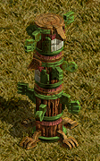
○
石像
(119,319)をクリック
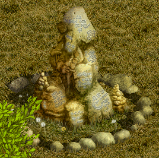
堕落した水の精霊
（Lv150）を倒す
○
石像
をクリック
○
木の像
(123,328)をクリックすると、奇妙な場所へ戻る
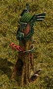
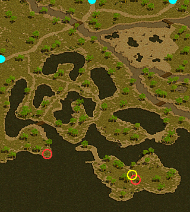
ロマ村 ビスル
メリルダ
へ
魔法傭兵の墓 Ｂ１
骸骨
(25,11)をクリック、ワープ
▲
火炎の守護者
（Lv150）Zinを倒す、ワープ
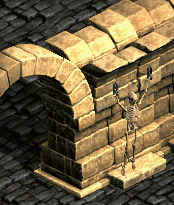 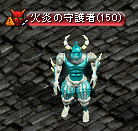
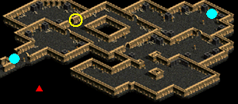
ロマ村 ビスル
メリルダ
へ
タトバ山頂上登山路
大地の番人
（Lv154）を倒す
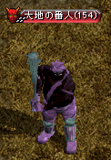
ロマ村 ビスル
メリルダ
へ
闇に落ちし者
砂漠村リンケンにいる
錬金術師バルモン
が、不死の霊薬を作るために必要な材料である
縮んだ黒い心臓
を手に入れてほしいと頼んできた。
縮んだ黒い心臓
は、デフヒルズの
闇の地
にいる
闇の邪術師
から手に入れることができるという。
縮んだ黒い心臓
を手に入れた。砂漠村リンケンにいる
錬金術師バルモン
のところに戻ろう。
砂漠村リンケンにいる
錬金術師バルモン
が、不死の霊薬を作るために必要な2つ目の材料
黒い血液
を 5つ手に入れてほしいと頼んできた。
黒い血液
は、壊れた道で手に入れることができるという。
黒い血液
5個をすべて手にいれた。砂漠村リンケンにいる
錬金術師バルモン
のところに戻ろう。
砂漠村リンケンにいる
錬金術師バルモン
が、不死の霊薬を作るために必要な最後の材料である
カリゴの草露
を5つを手に入れてほしいと頼んできた。
カリゴの草露
は、蒸留器を利用すれば手に入るという。カリゴの草露は、ナラダ平原の沼地帯 / ノーススワンプにあるという。
カリゴの草露
5つをすべて手にいれた。 砂漠村リンケンにいる
錬金術師バルモン
のところに戻ろう。
受諾場所
砂漠村リンケン 錬金術師バルモン(42,14)
受諾条件
Lv200
報酬
経験値40万 錬金術Lv4
デフヒルズ
闇の邪術師
（Lv200）を倒す
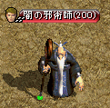
砂漠村リンケン
錬金術師バルモン
へ
壊れた道
バケツ
をクリック
(74,90)(88,89)(98,22)(98,58)(100,99)(102,42)(109,47)(110,15)(112,56)(114,42)(115,68)(119,120)(122,28)(131,33)(134,58)(138,42)(140,118)(142,26)(144,149)(148,75)(154,30)(156,121)(158,62)(164,41)(168,37)
の25箇所あるが、少し時間が経つと何度でもクリックできる。
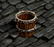
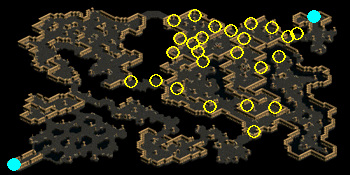
砂漠村リンケン
錬金術師バルモン
へ
ナラダ平原の沼地帯 / ノーススワンプ
草
をクリック
(239,135)(243,149)(243,161)(247,140)(248,128)(248,151)(253,165)(257,131)(257,145)(259,174)(260,164)(262,129)(265,138)(265,173)(266,157)(268,182)(270,146)(271,129)(271,162)(276,174)
の20箇所あるが、少し時間が経つと何度でもクリックできる。
クリックする度に、成功時はHP1/4、失敗時はHP1/2のダメージを受ける。
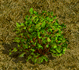
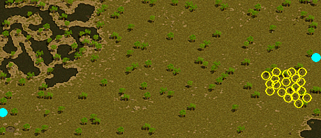
回復しながら倒すのがセオリーだが、回復スキルが無い職業の場合は以下の手順が有効なケースがある。
コツとしては、錬金術１で余ったキャンディーと高級復活巻物を併用する方法。
ハズレ->HP5回復->ハズレでもHPが10程度残るのを活かすと復活の手間を減らしつつスムーズに進められる。
もしくは魔法ダメージをHP吸収のようなOPを使い、近くの敵を倒しながら討伐する方法。
ペット・召喚獣が倒さない場合にはOPでカバーするのがやりやすい。
砂漠村リンケン
錬金術師バルモン
へ
大地を鎮めろ！
ヘムクロス高原 / アラク湖付近にいる
錬金術師ハテル
が、スウェブタワー １Ｆに行き、
魔力探知機
で魔力を探知し、その数値を確認してきてほしいと頼んできた。スウェブタワー １Ｆの
魔力動力機
がある場所で魔力を探知することができるという。
魔力探知機
でスウェブタワーの魔力を探知し、数値を確認した。
錬金術師ハテル
のところに戻ろう。
ヘムクロス高原/アラク湖付近にいる
錬金術師ハテル
が、河口ダンジョン 'ラ' Ｂ２にいるモンスターから、
清浄な神水
を10個を手に入れてほしいと頼んできた。
清浄な神水
10個をすべ集めた。ヘムクロス高原/アラク湖付近にる
錬金術師ハテル
のところに戻ろう。
錬金術師ハテル
が作った
暴雨の秘薬
を持って、アラク湖の北側に向かおう。そこで、アラク湖に向かって
暴雨の秘薬
を投げ、アラク湖の水量を増やさなければならない。
アラク湖に
暴雨の秘薬
を投げた。アラク湖の水量が増え、ヘムクロス高原の高度が再び正常に戻った。
錬金術師ハテル
のところに戻ろう。
受諾場所
ヘムクロス高原 / アラク湖付近 錬金術師ハテル(204,155)
受諾条件
Lv250
報酬
経験値68万 錬金術Lv5
スウェブタワー １Ｆ
魔力動力機
(58,49)をクリック
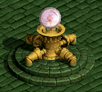
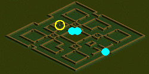
ヘムクロス高原 / アラク湖付近
錬金術師ハテル
へ
河口ダンジョン 'ラ' Ｂ２
キャストアイ
（Lv195）、
メロウ
（Lv200）、
メロウマウラー
（Lv195）を倒す
ヘムクロス高原 / アラク湖付近
錬金術師ハテル
へ
柱
(180,79)をクリック
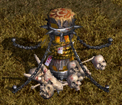
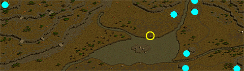
錬金術師ハテル
へ
その他